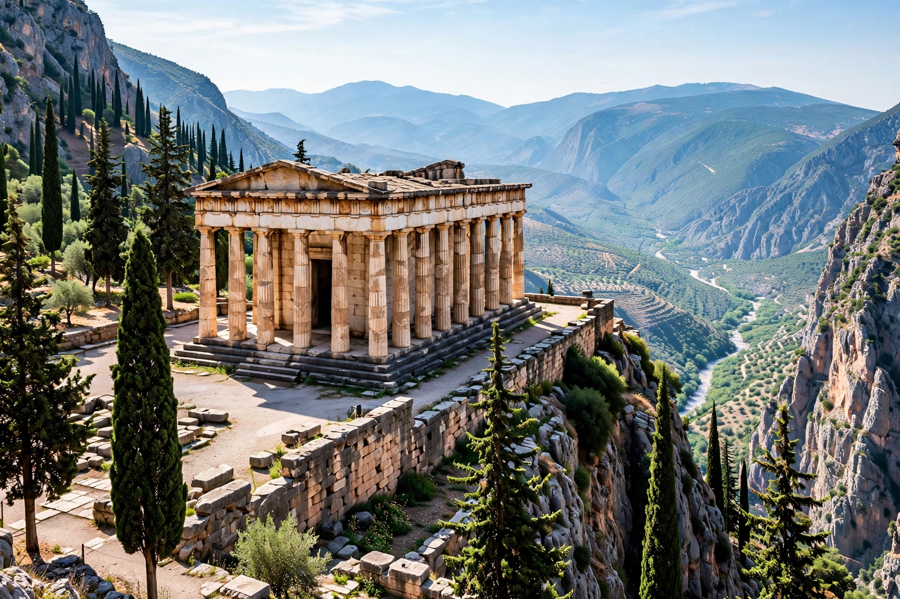

Alcmaeonidae
The Alcmaeonidae (Ancient Greek: Ἀλκμαιωνίδαι) were a wealthy and powerful aristocratic family of ancient Athens, claiming descent from the mythical Alcmaeon, great-grandson of Nestor of Pylos. For more than two centuries they played a leading — and repeatedly controversial — role in Athenian politics: they were exiled for sacrilege, courted tyrants and Persian kings, rebuilt the temple of Apollo at Delphi, helped overthrow the Athenian tyranny, produced the reformer Cleisthenes, and were the maternal family of Pericles.

| Alcmaeonidae | |
|---|---|
| Place of origin | Athens |
| Claimed ancestor | Alcmaeon (descendant of Nestor) |
| Prominent members | Megacles; Cleisthenes; Agariste; Xanthippus; Pericles (maternal line) |
The Alcmaeonid curse
Around 632 BC, after the failed coup of Cylon, the conspirators were killed despite taking refuge at the altars of the gods — an act of sacrilege for which the archons of the day, including the Alcmaeonid Megacles, were held responsible. The family was exiled and thereafter dogged by charges of the "curse" (the Cylonian pollution), which their enemies — notably Sparta and later political rivals — revived whenever convenient, including against Pericles on the eve of the Peloponnesian War.
Exile, Delphi and the fall of the tyranny
Exiled again under the tyrant Peisistratos, the Alcmaeonidae contracted to rebuild the temple of Apollo at Delphi after a fire (c. 548 BC); according to Herodotus they finished its façade in fine Parian marble, and persuaded the Delphic oracle to press Sparta to liberate Athens. Spartan intervention duly expelled the tyrant Hippias in 510 BC, after which Cleisthenes, outmanoeuvring his rival Isagoras, carried the democratic reforms of 508/7 BC that reorganised Athens into demes and ten new tribes.
Later generations
Through Cleisthenes' niece Agariste, wife of Xanthippus, the family became the maternal line of Pericles and Alcibiades, remaining prominent — and controversial — into the fifth century BC.
Categories: Ancient Athenian families · Alcmaeonidae